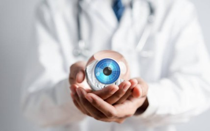

Dry eyes can cause burning, irritation, watering, redness, and fluctuating vision, making everyday activities uncomfortable. At Khanna Eye Centre, we provide personalised dry eye treatment in Nirmaan Vihar based on the underlying cause, severity, and individual eye health.

Dry eye is a common eye condition that occurs when the eyes do not produce enough tears or when tears evaporate too quickly. A healthy tear film keeps the surface of the eye lubricated and supports comfortable, clear vision. Changes in tear production, tear quality, or the eyelid and oil glands can affect this protective layer. A detailed eye examination can help identify the factors contributing to dryness and guide appropriate treatment.

Dry eye can develop due to several factors affecting tear production, evaporation, or the quality of the tear film.
The eyes may produce fewer tears than needed to maintain adequate moisture on the ocular surface. Age, certain health conditions, and some medications can contribute to reduced tear production.
When tears evaporate too quickly, the eye surface can become dry even when tear production appears normal. This is commonly associated with an unstable tear film.
The meibomian glands in the eyelids produce oils that help slow tear evaporation. Blockage or dysfunction of these glands can affect tear stability and contribute to dryness.
Extended periods of computer, mobile, or tablet use can reduce the frequency of blinking. Fewer complete blinks may allow tears to evaporate faster and leave the eyes feeling dry or strained.
Long-term or improper contact lens use may contribute to dryness in some individuals by affecting the tear film and the comfort of the ocular surface.
Air conditioning, fans, smoke, dust, pollution, dry weather, and exposure to strong winds can increase tear evaporation and aggravate dry eye symptoms.
Dry eye symptoms can vary in intensity and may come and go depending on environmental conditions and daily activities.
A burning, stinging, or irritated sensation may occur when the eye surface does not remain adequately lubricated.
Some people feel as though there is sand or a foreign object in the eye, particularly after prolonged screen use or exposure to dry environments.
Interestingly, dry eyes can sometimes cause watery eyes. Irritation on the ocular surface may trigger reflex tearing that does not provide lasting lubrication.
A proper diagnosis helps identify whether dryness is related to tear production, evaporation, eyelid function or another ocular condition.
The stability and quality of the tear film can be assessed to understand how effectively tears remain distributed across the eye.
Specific tests may be used to evaluate whether the eyes are producing an adequate quantity of tears.
Your ophthalmologist examines the cornea, conjunctiva and other structures on the eye's surface for signs of irritation, inflammation or damage.
The eyelids and oil-producing meibomian glands may be examined to identify blockage or dysfunction that could contribute to excessive tear evaporation.
We combine detailed evaluation, experienced ophthalmic care and personalised treatment planning to address the factors contributing to dry eye.
Your symptoms and eye health are evaluated by experienced eye specialists.
Assessment helps identify possible causes affecting your tear film and ocular surface.
Appropriate tests support a more detailed understanding of your dry eye condition.
Treatment is planned according to your symptoms, underlying cause and severity.
Treatment depends on what is causing the dryness and whether the condition is mild, moderate or persistent. Your ophthalmologist may recommend one or a combination of approaches.
Lubricating eye drops can supplement the natural tear film and provide relief from dryness, burning and irritation.
When inflammation or other underlying factors contribute to dry eye, your ophthalmologist may prescribe specific medications as part of the treatment plan.
If meibomian gland dysfunction is contributing to tear evaporation, treatment may focus on improving gland function and maintaining healthier eyelid margins.
Appropriate warm compresses and eyelid hygiene may help maintain the function of the oil-producing glands and support tear film stability.
For selected patients with inadequate tear retention, punctal plugs may be considered to reduce tear drainage and help tears remain on the eye surface for longer.
Adjustments such as taking regular screen breaks, blinking fully, avoiding direct airflow and using appropriate environmental humidity can help reduce triggers that worsen dryness.
Simple daily habits can help reduce eye-surface stress and minimise exposure to common dry eye triggers.
During prolonged screen use, look at something around 20 feet away for 20 seconds every 20 minutes to give your eyes a regular break.
Conscious, complete blinking during computer and mobile use can help spread tears evenly across the surface of the eye.
Do not position fans or air-conditioner vents directly towards your face, as continuous airflow can increase tear evaporation.
Maintaining adequate fluid intake supports overall hydration and can be a useful part of a healthy eye-care routine.
A family legacy of ophthalmology, treating Delhi since 1951.

35+ years' expertise; trains ophthalmologists across India.

15+ years in advanced phaco & retinal care.

15+ years in cornea & specs-removal surgery.

15+ years in advanced retina & micro-incision surgery.
"My mother had her cataract surgery done here, and the experience was excellent. The surgery was very successful. The doctors are highly professional, and the entire staff is very kind, supportive, and helpful. They take good care of patients and explain everything properly. We are very satisfied with the treatment and overall service. Highly recommended Khanna Eye Centre."
"My father was under the treatment of Dr. Aman Khanna. He did a fantastic job. My father's vision is very good after cataract surgery."
"Khanna Eye Centre, Nirman Vihar: Outstanding Cataract Surgery! My Father’s cataract surgery was an excellent experience here. The doctors were professional, patient, and explained the procedure clearly. The operation was smooth, and her vision improved remarkably within days. The staff was courteous and supportive. The centre is clean, well-organized, and uses advanced technology. Highly recommend!"
Schedule your dry eye consultation with our specialists at Khanna Eye Centre. We'll examine your eyes, explain your options honestly, and provide a clear treatment plan.